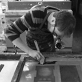

| #welovedata #spaceapps | ||||||||||
|
Started at the International Space Apps Challenge 21 to 22 April 2012 |
| |||||||||
We Love Data has just started this weekend with the International Space Apps Challenge A team of 7 working at the Met Office in Exeter, Devon have just started the incredible journey of linking up data with the physical world. Can we then fall in love with data by using data to connect us to events in space? It could be that the International Space Station is overhead; it could be that a solar storm has exceeded a threshold; or that in space it is very very cold. Can we use simple physical interactions to connect us to data? Can we bring data a bit closer to us? Can we wear data? Or build jewellery that connects data to our skin? Can we adorn and decorate our lives with data from space? Watch out for more updates here |
||||||||||
| The Team | ||||||||||
|  | ||||||||||
Rupa Chilvers Analyist |
Omar Jamil Research / Software |
Dougie Kinnear Jeweller |
Tom Metcalfe Designer |
Clinton Montague Code Wrangler |
||||||
Jon Rogers Enthusiast |
Josh Trotter-Wanner ... |
Andy Wood Software Engineer |
|
|
||||||